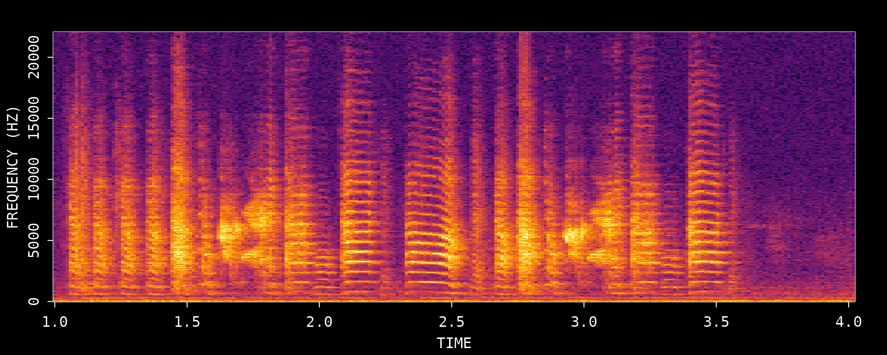
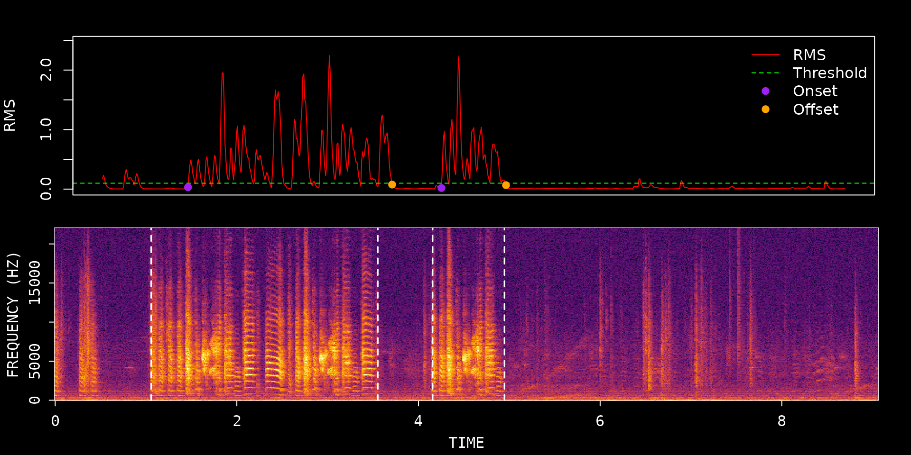
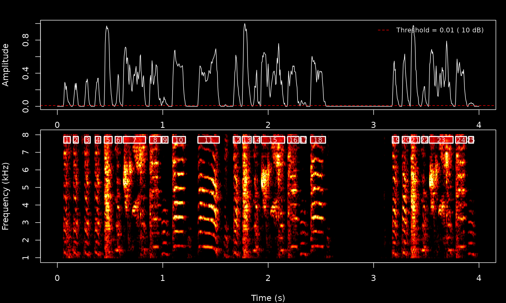
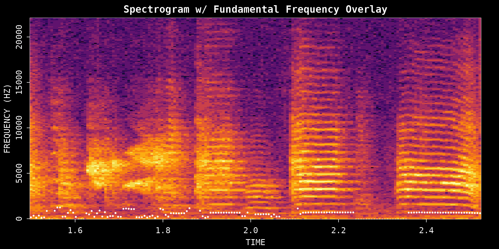

Single WAV File Analysis with ASAP
single_wav_analysis.RmdIntroduction
This vignette demonstrates how to use ASAP functions for analyzing single WAV files of zebra finch vocalizations. While ASAP is designed for large-scale longitudinal studies, all core analysis functions work directly with individual audio files, making it easy to explore and understand your data.
We’ll cover:
- Audio Visualization - View spectrograms
- Bout Detection - Find singing periods
- Syllable Segmentation - Detect individual syllables
- Spectral Entropy - Measure spectral structure
- Fundamental Frequency - Extract pitch contours
- Amplitude Envelope - Analyze temporal dynamics
Setup
library(ASAP)
# Get path to example WAV file included with the package
wav_file <- system.file("extdata", "zf_example.wav", package = "ASAP")1. Audio Visualization
The visualize_song() function creates spectrogram
visualizations of audio recordings. This is typically the first step in
exploring your data.
Full recording
# Visualize the entire recording
visualize_song(wav_file)
#> Song visualization completed for: zf_example.wavSpecific time window
You can focus on a specific time range using
start_time_in_second and
end_time_in_second:
# Visualize a 3-second segment
visualize_song(wav_file,
start_time_in_second = 1,
end_time_in_second = 4)
#> Song visualization completed for: zf_example.wav2. Bout Detection
A “bout” is a continuous period of singing. The
find_bout() function automatically detects bout boundaries
using RMS (root mean square) amplitude thresholding with bandpass
filtering.
# Detect bouts in the recording
bouts <- find_bout(wav_file,
rms_threshold = 0.1, # Amplitude threshold (0-1)
min_duration = 0.7, # Minimum bout length in seconds
plot = TRUE) # Show detection plot
# View detected bouts as a table
knitr::kable(bouts, digits = 3)| filename | selec | start_time | end_time |
|---|---|---|---|
| zf_example.wav | 1 | 1.057 | 3.553 |
| zf_example.wav | 2 | 4.156 | 4.946 |
3. Syllable Segmentation
The segment() function detects individual syllables
within a specified time window using dynamic spectral thresholding.
# Segment syllables in a time window
syllables <- segment(wav_file,
start_time = 1, # Start time (seconds)
end_time = 5, # End time (seconds)
flim = c(1, 8), # Frequency limits (kHz)
silence_threshold = 0.01,
min_syllable_ms = 20, # Minimum syllable duration
max_syllable_ms = 240, # Maximum syllable duration
min_level_db = 10, # Starting threshold (dB)
verbose = FALSE)
# View detected syllables as a table
knitr::kable(syllables, digits = 3)| filename | selec | threshold | .start | .end | start_time | end_time | duration | silence_gap |
|---|---|---|---|---|---|---|---|---|
| zf_example.wav | 1 | 10 | 0.061 | 0.123 | 1.061 | 1.123 | 0.061 | NA |
| zf_example.wav | 2 | 10 | 0.151 | 0.199 | 1.151 | 1.199 | 0.047 | 0.028 |
| zf_example.wav | 3 | 10 | 0.260 | 0.312 | 1.260 | 1.312 | 0.052 | 0.061 |
| zf_example.wav | 4 | 10 | 0.359 | 0.411 | 1.359 | 1.411 | 0.052 | 0.047 |
| zf_example.wav | 5 | 10 | 0.444 | 0.520 | 1.444 | 1.520 | 0.076 | 0.033 |
| zf_example.wav | 6 | 10 | 0.548 | 0.610 | 1.548 | 1.610 | 0.061 | 0.028 |
| zf_example.wav | 7 | 10 | 0.624 | 0.837 | 1.624 | 1.837 | 0.213 | 0.014 |
| zf_example.wav | 8 | 10 | 0.875 | 0.983 | 1.875 | 1.983 | 0.109 | 0.038 |
| zf_example.wav | 9 | 10 | 0.993 | 1.050 | 1.993 | 2.050 | 0.057 | 0.009 |
| zf_example.wav | 10 | 10 | 1.092 | 1.215 | 2.092 | 2.215 | 0.123 | 0.043 |
| zf_example.wav | 11 | 10 | 1.333 | 1.537 | 2.333 | 2.537 | 0.203 | 0.118 |
| zf_example.wav | 12 | 10 | 1.669 | 1.735 | 2.669 | 2.735 | 0.066 | 0.132 |
| zf_example.wav | 13 | 10 | 1.754 | 1.839 | 2.754 | 2.839 | 0.085 | 0.019 |
| zf_example.wav | 14 | 10 | 1.858 | 1.920 | 2.858 | 2.920 | 0.061 | 0.019 |
| zf_example.wav | 15 | 10 | 1.934 | 2.156 | 2.934 | 3.156 | 0.222 | 0.014 |
| zf_example.wav | 16 | 10 | 2.184 | 2.293 | 3.184 | 3.293 | 0.109 | 0.028 |
| zf_example.wav | 17 | 10 | 2.307 | 2.359 | 3.307 | 3.359 | 0.052 | 0.014 |
| zf_example.wav | 18 | 10 | 2.402 | 2.544 | 3.402 | 3.544 | 0.142 | 0.043 |
| zf_example.wav | 19 | 10 | 3.177 | 3.239 | 4.177 | 4.239 | 0.061 | 0.634 |
| zf_example.wav | 20 | 10 | 3.272 | 3.343 | 4.272 | 4.343 | 0.071 | 0.033 |
| zf_example.wav | 21 | 10 | 3.352 | 3.437 | 4.352 | 4.437 | 0.085 | 0.009 |
| zf_example.wav | 22 | 10 | 3.456 | 3.513 | 4.456 | 4.513 | 0.057 | 0.019 |
| zf_example.wav | 23 | 10 | 3.527 | 3.754 | 4.527 | 4.754 | 0.227 | 0.014 |
| zf_example.wav | 24 | 10 | 3.778 | 3.882 | 4.778 | 4.882 | 0.104 | 0.024 |
| zf_example.wav | 25 | 10 | 3.901 | 3.948 | 4.901 | 4.948 | 0.047 | 0.019 |
4. Spectral Entropy Analysis
Spectral entropy measures the “randomness” or structure in the frequency distribution. Harmonic sounds (like syllables) have low entropy, while noisy sounds have high entropy.
# Calculate spectral entropy for a segment
entropy_result <- spectral_entropy(wav_file,
start_time = 1.5,
end_time = 2.5,
method = "wiener", # or "shannon"
normalize = TRUE,
plot = TRUE)
5. Fundamental Frequency (Pitch) Analysis
The FF() function extracts the fundamental frequency
(F0) contour, which represents the perceived pitch of the vocalization
over time.
# Extract fundamental frequency
pitch_result <- FF(wav_file,
start_time = 1.5,
end_time = 2.5,
method = "cepstrum", # Cepstral analysis
fmax = 1400, # Maximum F0 to detect (Hz)
threshold = 10, # Confidence threshold
plot = TRUE)
6. Amplitude Envelope
The amplitude envelope represents the temporal dynamics of sound
intensity. Use amp_env() on segmented data to extract
envelope profiles.
# Extract amplitude envelope for the second bout
if (!is.null(bouts) && nrow(bouts) >= 2) {
env_bout <- amp_env(bouts[2, ],
wav_dir = dirname(wav_file),
msmooth = c(256, 50),
norm = TRUE,
plot = TRUE)
}We can also extract the envelope for individual syllables:
Putting It All Together
Here’s a typical workflow for single-file analysis:
library(ASAP)
# 1. Load and visualize
wav_file <- "path/to/your/recording.wav"
visualize_song(wav_file, start_time_in_second = 0, end_time_in_second = 10)
# 2. Detect bouts
bouts <- find_bout(wav_file, rms_threshold = 0.1, min_duration = 0.7)
# 3. Segment syllables
if (!is.null(bouts) && nrow(bouts) > 0) {
syllables <- segment(wav_file,
start_time = bouts$start_time[1],
end_time = bouts$end_time[1],
min_level_db = 10)
}
# 4. Analyze acoustic features
entropy <- spectral_entropy(wav_file,
start_time = bouts$start_time[1],
end_time = bouts$end_time[1])
pitch <- FF(wav_file,
start_time = bouts$start_time[1],
end_time = bouts$end_time[1])
# 5. Extract amplitude envelope
env <- amp_env(bouts[1, ],
wav_dir = dirname(wav_file),
msmooth = c(256, 50),
norm = TRUE,
plot = TRUE)Session Info
sessionInfo()
#> R version 4.5.2 (2025-10-31)
#> Platform: x86_64-pc-linux-gnu
#> Running under: Ubuntu 24.04.3 LTS
#>
#> Matrix products: default
#> BLAS: /usr/lib/x86_64-linux-gnu/openblas-pthread/libblas.so.3
#> LAPACK: /usr/lib/x86_64-linux-gnu/openblas-pthread/libopenblasp-r0.3.26.so; LAPACK version 3.12.0
#>
#> locale:
#> [1] LC_CTYPE=C.UTF-8 LC_NUMERIC=C LC_TIME=C.UTF-8
#> [4] LC_COLLATE=C.UTF-8 LC_MONETARY=C.UTF-8 LC_MESSAGES=C.UTF-8
#> [7] LC_PAPER=C.UTF-8 LC_NAME=C LC_ADDRESS=C
#> [10] LC_TELEPHONE=C LC_MEASUREMENT=C.UTF-8 LC_IDENTIFICATION=C
#>
#> time zone: UTC
#> tzcode source: system (glibc)
#>
#> attached base packages:
#> [1] stats graphics grDevices utils datasets methods base
#>
#> other attached packages:
#> [1] ASAP_0.3.3
#>
#> loaded via a namespace (and not attached):
#> [1] sass_0.4.10 generics_0.1.4 tidyr_1.3.2 lattice_0.22-7
#> [5] digest_0.6.39 magrittr_2.0.4 evaluate_1.0.5 grid_4.5.2
#> [9] RColorBrewer_1.1-3 fastmap_1.2.0 jsonlite_2.0.0 Matrix_1.7-4
#> [13] tuneR_1.4.7 purrr_1.2.1 scales_1.4.0 pbapply_1.7-4
#> [17] textshaping_1.0.4 jquerylib_0.1.4 cli_3.6.5 rlang_1.1.7
#> [21] pbmcapply_1.5.1 fftw_1.0-9 seewave_2.2.4 cachem_1.1.0
#> [25] yaml_2.3.12 av_0.9.6 tools_4.5.2 parallel_4.5.2
#> [29] dplyr_1.1.4 ggplot2_4.0.1 reticulate_1.44.1 vctrs_0.7.0
#> [33] R6_2.6.1 png_0.1-8 lifecycle_1.0.5 fs_1.6.6
#> [37] MASS_7.3-65 ragg_1.5.0 pkgconfig_2.0.3 desc_1.4.3
#> [41] pkgdown_2.2.0 pillar_1.11.1 bslib_0.9.0 gtable_0.3.6
#> [45] glue_1.8.0 Rcpp_1.1.1 systemfonts_1.3.1 xfun_0.56
#> [49] tibble_3.3.1 tidyselect_1.2.1 knitr_1.51 farver_2.1.2
#> [53] htmltools_0.5.9 patchwork_1.3.2 rmarkdown_2.30 signal_1.8-1
#> [57] compiler_4.5.2 S7_0.2.1